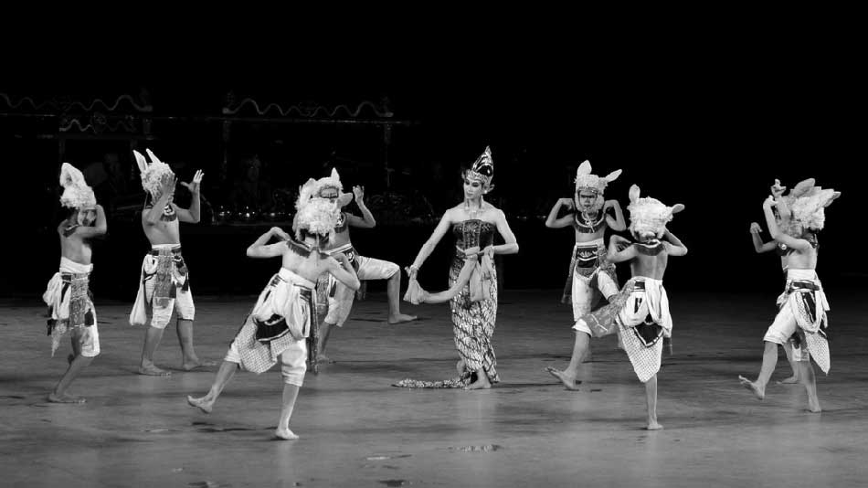
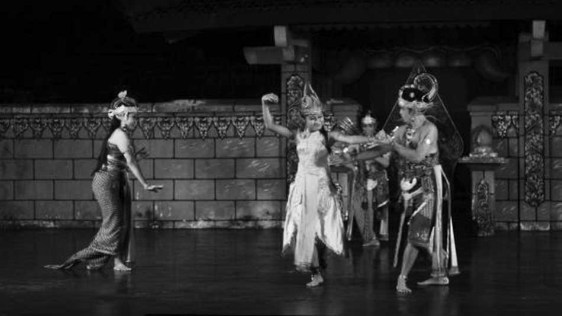

RAMAYANA THEATER TERBUKA
Pentas di bulan Mei - Oktober
19:30 - 21:30 WIB
Prambanan, Yogyakarta

TRIMURTI THEATER
Pentas setiap Selasa, Rabu, dan Sabtu
19:30 - 21:00 WIB
Prambanan, Yogyakarta
PERTUNJUKAN RUTIN SENI BUDAYA YOGYAKARTA LAINNYA
Tari Klasik & Musik Tradisional di Kasultanan Yogyakarta
Senin, Selasa, Rabu
Musik Tradisional / Gamelan
10:00 - 12:00 WIB
Kamis
Pentas Wayang Golek
10:00 - 12:00 WIB
Sabtu
Macapat
09:00 - 12:30 WIB
Pertunjukan Wayang Kulit
Sasana Hinggil
Alun-alun Selatan Yogyakarta
Pertunjukan hari Sabtu kedua pada setiap bulan
21:00 - 05:30 WIB
Sonobudoyo
Jln. Trikora Yogyakarta
Pertunjukan setiap malam kecuali hari Minggu
20:00 - 22:00 WIB
Fragmen Kepahlawanan Ramayana
Purawisata Theater Terbuka
Jln. Brigjen Katamso Yogyakarta
Pentas setiap malam
20:00 - 22:00 WIB